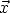

|
4.
Process Modeling
4.2. Underlying Assumptions for Process Modeling 4.2.1. What are the typical underlying assumptions in process modeling?
|
|||
| Parameter Estimation Requires Known Relationship Between Data and Regression Function | To be able to estimate the unknown parameters in the regression function, it is necessary to know how the data at each point in the explanatory variable space relate to the corresponding value of the regression function. For example, if the measurement system used to observe the values of the response variable drifts over time, then the deterministic variation in the data would be the sum of the drift function and the true regression function. As a result, either the data would need to be adjusted prior to fitting the model or the fitted model would need to be adjusted after the fact to obtain the regression function. In either case, information about the form of the drift function would be needed. Since it would be difficult to generalize an activity like drift correction to a generic process, and since it would also be unnecessary for many processes, most process modeling methods rely on having data in which the observed responses are directly equal, on average, to the regression function values. Another way of expressing this idea is to say the mean of the random errors at each combination of explanatory variable values is zero. | ||
| Validity of Assumption Improved by Experimental Design | The validity of this assumption is determined by both the nature of the process and, to some extent, by the data collection methods used. The process may be one in which the data are easily measured and it will be clear that the data have a direct relationship to the regression function. When this is the case, use of optimal methods of data collection are not critical to the success of the modeling effort. Of course, it is rarely known that this will be the case for sure, so it is usually worth the effort to collect the data in the best way possible. | ||
| Other processes may be less easily dealt with, being subject to measurement drift or other systematic errors. For these processes it may be possible to eliminate or at least reduce the effects of the systematic errors by using good experimental design techniques, such as randomization of the measurement order. Randomization can effectively convert systematic measurement errors into additional random process error. While adding to the random error of the process is undesirable, this will provide the best possible information from the data about the regression function, which is the current goal. | |||
| In the most difficult processes even good experimental design may not be able to salvage a set of data that includes a high level of systematic error. In these situations the best that can be hoped for is recognition of the fact that the true regression function has not been identified by the analysis. Then effort can be put into finding a better way to solve the problem by correcting for the systematic error using additional information, redesigning the measurement system to eliminate the systematic errors, or reformulating the problem to obtain the needed information another way. | |||
| Assumption Violated by Errors in Observation of  | Another more subtle violation of this assumption occurs when the explanatory variables are observed with random error. Although it intuitively seems like random errors in the explanatory variables should cancel out on average, just as random errors in the observation of the response variable do, that is unfortunately not the case. The direct linkage between the unknown parameters and the explanatory variables in the functional part of the model makes this situation much more complicated than it is for the random errors in the response variable . More information on why this occurs can be found in Section 4.2.1.6. | ||